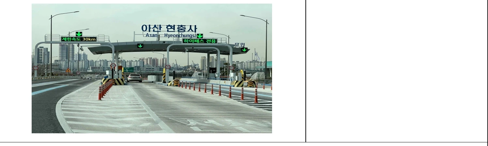

741. Which of the following are incorrect ways to drive in the given situation? (Select TWO)

- ①Hi-Pass users should switch to the Hi-Pass lane in advance.
- ②You need not pay attention to oncoming traffic, as there is no need to stop in the Hi-Pass lane.
- ③If you intend to pay in cash or card, move to the correct lane in advance.
- ④If you intend to pay in cash but find yourself in the wrong lane, reverse to go to the correct lane.
- ⑤Maintain your speed within 30 km/h when passing a tollgate.
Show answer
Answer
② You need not pay attention to oncoming traffic, as there is no need to stop in the Hi-Pass lane.
④ If you intend to pay in cash but find yourself in the wrong lane, reverse to go to the correct lane.
Reference
At toll gates, you must select a route in advance to prevent congestion and accidents, so Hi-Pass vehicles must enter the dedicated lane in advance, and vehicles using cash or card must change to the corresponding lane in advance. Also, just because you are in the Hi-Pass lane, you cannot neglect to look ahead. Drivers of automobiles must not cross highways, make U-turns, or reverse while driving their vehicles (Article 62 of the Road Traffic Act). Therefore, the wrong driving methods are ② and ④.
Reference text is a machine translation for study.